CODING AGENTS AS PIXEL WORLD MODELS
traex/GPT-6.1-Sol · common50_0018
点击播放 · 原生 RGB 像素
逐轮保存的候选
回放视频、检查图与代码变化。
每份候选均可单独播放。实际图片检查记录在下方工具轨迹中。
候选 01播放与检查图
点击播放 · 原生 RGB 像素
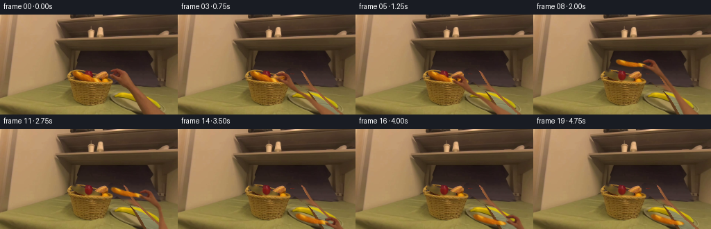
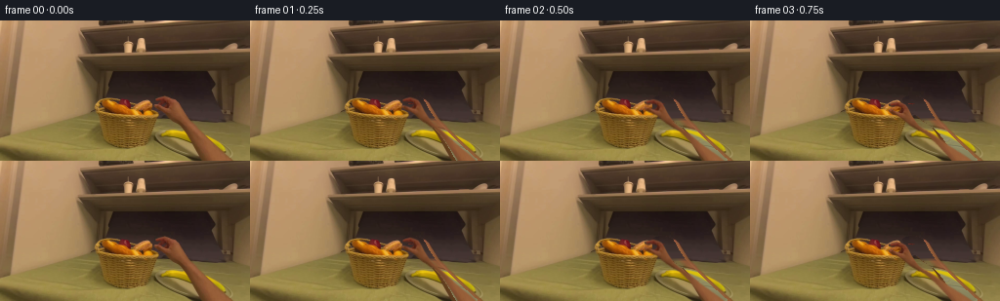
展开代码变化
--- 上一保存版本
+++ 本次保存版本
@@ -0,0 +1,181 @@
+from pathlib import Path
+import numpy as np
+from PIL import Image, ImageDraw, ImageFilter
+import cv2
+from scipy.spatial import Delaunay
+from artifact_io import save
+
+ROOT=Path(__file__).resolve().parent
+W,H=256,144
+im=np.array(Image.open(ROOT/'first_frame.png').convert('RGB'))
+
+def poly_mask(points, h=H, w=W, feather=.35):
+ s=4
+ m=Image.new('L',(w*s,h*s)); ImageDraw.Draw(m).polygon([(round(x*s),round(y*s)) for x,y in points],fill=255)
+ m=m.resize((w,h),Image.Resampling.LANCZOS)
+ if feather: m=m.filter(ImageFilter.GaussianBlur(feather))
+ return np.array(m).astype(np.float32)/255
+
+# The original silhouette is preserved, including the curled index and thumb.
+hand_outline=[(157.9,80.7),(162.6,78.9),(166.2,78.1),(169.3,78.9),(172.1,80.1),(175,81.5),(177.1,84.0),(179.0,87.5),(181,91.7),(183.9,96.5),(188.8,103.4),(196.5,111),(204.9,119.1),(215.1,129.6),(230.9,143.7),(270,183),(249,183),(213.1,143.7),(206.4,131.8),(200.5,122.1),(195.0,114.7),(190.6,110.1),(185.8,106.5),(179.8,102.4),(174.1,98.1),(170.8,95),(166.9,92.8),(162.4,91.4),(159.9,89.9),(157.7,87.6),(158.5,86.6),(160.4,86.7),(163.8,87.7),(166.9,88.4),(168.9,87.8),(170.6,86.2),(170.9,84.8),(169.7,83.7),(167.5,82.9),(164.8,83),(162.8,83.7),(160.8,83.4),(158.7,83.1),(157.9,82.2)]
+hand_mask=poly_mask(hand_outline)
+# Remove only the moving arm; the room and all unoccluded food stay untouched.
+remove=(hand_mask>.09).astype(np.uint8)*255
+remove=cv2.dilate(remove,np.ones((3,3),np.uint8))
+base=cv2.inpaint(im,remove,4,cv2.INPAINT_TELEA).astype(np.float32)
+y,x=np.mgrid[:H,:W].astype(np.float32)
+# Reconstruct portions of the grey plate that were hidden by the forearm.
+ang=np.deg2rad(18)
+u=(x-198.5)*np.cos(ang)+(y-127.7)*np.sin(ang)
+v=-(x-198.5)*np.sin(ang)+(y-127.7)*np.cos(ang)
+r=np.sqrt((u/42.4)**2+(v/15.5)**2)
+plate=np.clip((1.015-r)/.065,0,1)
+# Fine surface texture copied from the visible lower-left part of the plate.
+noise=im.astype(float)-cv2.GaussianBlur(im.astype(float),(5,5),0)
+tex=np.roll(noise,(9,34),axis=(0,1))*.4
+col=np.stack([139-11*v/15-8*(u/43)**2,135-10*v/15-8*(u/43)**2,96-7*v/15-5*(u/43)**2],axis=-1)+tex
+edge=np.exp(-((r-.955)/.027)**2)
+col-=edge[...,None]*np.array([20,19,14])
+inner=np.exp(-((r-.891)/.028)**2)
+col+=inner[...,None]*np.array([12,11,8])
+# Soft cast shadow below the plate at the table edge.
+sh=np.exp(-((r-1.055)/.04)**2)*.2
+filled=base*(1-sh[...,None])
+filled=filled*(1-plate[...,None])+col*plate[...,None]
+# Back wall has a very soft horizontal change of illumination.
+wallpatch=np.zeros_like(base)
+for yy in range(H):
+ sy=min(yy,103)
+ for xx in range(W):
+ sx=min(218,max(201,xx+46))
+ wallpatch[yy,xx]=im[sy,sx]
+wall_a=np.clip((103-y)/4,0,1)
+filled=filled*(1-wall_a[...,None])+wallpatch*wall_a[...,None]
+# Preserve known scene pixels, replacing only the occluded area.
+a=remove.astype(float)/255
+base=im*(1-a[...,None])+filled*a[...,None]
+
+# Continue the banana's visible arc across the initially occluded middle.
+banana_points=[(164.0,115.4),(167.6,112.2),(173.0,111.8),(181.0,112.0),(188.0,113.4),(195.5,116.0),(203.3,119.0),(211.0,123.0),(217.7,126.8),(225,131.2),(229,133.3),(230.0,132.0),(228.1,128.0),(223.8,123.4),(218.0,119.7),(210.6,116.9),(203.2,114.4),(194.0,112.6),(184.0,111.4),(175.7,111.1),(168.9,112.3),(165.0,113.8)]
+bm=poly_mask(banana_points,feather=.6)
+banana_color=np.stack([223-15*np.clip((y-114)/19,0,1),196-19*np.clip((y-114)/19,0,1),8+5*np.clip((y-114)/19,0,1)],axis=-1).astype(float)
+banana_color += tex*.35
+ba=bm*a
+base=base*(1-ba[...,None])+banana_color*ba[...,None]
+base=np.clip(base,0,255).astype(np.uint8)
+
+# The long crusty loaf at the front of the basket.
+bread_outline=[(105.8,81.1),(108.3,80.7),(110.5,81.8),(113.7,83.1),(117.4,85.0),(122.6,86.9),(128.9,89.0),(133.9,90.0),(138.1,91.4),(141.8,93.1),(143.8,94.9),(141.9,96.3),(138.3,96.5),(132.2,95.3),(127.0,94.8),(121.6,93.6),(115.6,91.2),(111.1,89.6),(107.5,87.7),(104.5,84.8),(104.2,82.7)]
+bread_mask=poly_mask(bread_outline,feather=.28)
+bread_remove=cv2.dilate((bread_mask>.12).astype(np.uint8)*255,np.ones((3,3),np.uint8))
+empty=cv2.inpaint(base,bread_remove,3,cv2.INPAINT_TELEA).astype(float)
+# A dim basket interior and the formerly occluded bottom of the red apple.
+cavity=np.clip((95.8-y)/2,0,1)*np.clip((y-81)/3,0,1)
+cavitycol=np.stack([99+8*np.sin(x*.47)+4*np.sin(y*1.2),82+6*np.sin(x*.47),37+3*np.sin(y)],axis=-1)
+ca=(bread_remove/255)*cavity*.76
+empty=empty*(1-ca[...,None])+cavitycol*ca[...,None]
+appler=((x-127.3)/6.1)**2+((y-87.9)/7.1)**2
+ap=np.clip((1-appler)*3,0,1)*(bread_remove/255)
+apcol=np.stack([111+17*np.exp(-((x-129)/2)**2)-3*(y-88),25+4*np.exp(-((x-129)/2)**2),20+np.zeros_like(x)],-1)
+empty=empty*(1-ap[...,None])+apcol*ap[...,None]
+# The wicker front rim is not carried along with the loaf.
+rim=np.clip((y-96)/1.2,0,1)
+empty=empty*(1-rim[...,None])+base*rim[...,None]
+empty=np.clip(empty,0,255).astype(np.uint8)
+
+# Extend the source forearm beyond the lower boundary before posing it.
+EH=188
+src=np.zeros((EH,W,3),np.uint8);src[:H]=im
+for yy in range(H,EH):
+ xx=np.arange(W)-int((yy-H+1)*.92)
+ src[yy]=im[H-1,np.clip(xx,0,W-1)]
+alpha=poly_mask(hand_outline,h=EH)
+source_rgba=np.dstack([src,alpha*255]).astype(np.float32)
+# A grid deforms only the arm. Finger and palm pixels remain rigid and recognizable.
+xs=np.array([140,150,157,161,165,169,174,180,188,199,213,228,245,267,291],float)
+ys=np.array([70,77,81,84,87,91,95,99,104,111,123,139,156,172,187],float)
+points=np.array([(xx,yy) for yy in ys for xx in xs],np.float32)
+tris=[]
+for j in range(len(ys)-1):
+ for i in range(len(xs)-1):
+ q=j*len(xs)+i
+ tris += [(q,q+1,q+len(xs)),(q+1,q+len(xs)+1,q+len(xs))]
+
+def hand_pose(grip, theta=0, close=0):
+ theta=np.deg2rad(theta); rot=np.array([[np.cos(theta),-np.sin(theta)],[np.sin(theta),np.cos(theta)]])
+ orig=np.array([160.,85.]); grip=np.array(grip,float)
+ dp=points.astype(float).copy()
+ # Imperceptibly tighten the C-shaped pinch when contact is established.
+ for k,(xx,yy) in enumerate(points):
+ if xx<170 and yy<91:
+ weight=np.clip((171-xx)/9,0,1)
+ dp[k,1]+=close*weight*(.7 if yy<85 else -.65)
+ rigid=(dp-orig)@rot.T+grip
+ wrist=(np.array([182.,101.])-orig)@rot.T+grip
+ elbow=np.array([239.,162.])
+ dv=elbow-wrist; length=np.linalg.norm(dv)
+ transverse=np.array([dv[1],-dv[0]])/length
+ dst=rigid.copy()
+ for k,(xx,yy) in enumerate(points):
+ if yy>99:
+ t=(yy-101)/61
+ csrc=182+(yy-101)*57/61
+ arm=wrist+t*dv+(xx-csrc)*transverse*.79
+ blend=np.clip((yy-99)/13,0,1)
+ dst[k]=rigid[k]*(1-blend)+arm*blend
+ mx=np.full((H,W),-1,np.float32);my=mx.copy()
+ for tr in tris:
+ s=points[list(tr)];d=dst[list(tr)].astype(np.float32)
+ xmin=max(0,int(np.floor(d[:,0].min())));xmax=min(W-1,int(np.ceil(d[:,0].max())))
+ ymin=max(0,int(np.floor(d[:,1].min())));ymax=min(H-1,int(np.ceil(d[:,1].max())))
+ if xmax<xmin or ymax<ymin:continue
+ xx,yy=np.meshgrid(np.arange(xmin,xmax+1),np.arange(ymin,ymax+1))
+ den=(d[1,1]-d[2,1])*(d[0,0]-d[2,0])+(d[2,0]-d[1,0])*(d[0,1]-d[2,1])
+ if abs(den)<1e-5:continue
+ w0=((d[1,1]-d[2,1])*(xx-d[2,0])+(d[2,0]-d[1,0])*(yy-d[2,1]))/den
+ w1=((d[2,1]-d[0,1])*(xx-d[2,0])+(d[0,0]-d[2,0])*(yy-d[2,1]))/den
+ w2=1-w0-w1;inside=(w0>=-1e-4)&(w1>=-1e-4)&(w2>=-1e-4)
+ mappedx=w0*s[0,0]+w1*s[1,0]+w2*s[2,0]
+ mappedy=w0*s[0,1]+w1*s[1,1]+w2*s[2,1]
+ patch=mx[ymin:ymax+1,xmin:xmax+1];patch[inside]=mappedx[inside]
+ patch=my[ymin:ymax+1,xmin:xmax+1];patch[inside]=mappedy[inside]
+ return cv2.remap(source_rgba,mx,my,cv2.INTER_LINEAR,borderMode=cv2.BORDER_CONSTANT)
+
+bread_src=np.dstack([im,bread_mask*255]).astype(np.float32)
+def bread_pose(grip,theta,scale):
+ th=np.deg2rad(theta);R=np.array([[np.cos(th),-np.sin(th)],[np.sin(th),np.cos(th)]])*scale
+ p=np.array([141.,93.]);g=np.array(grip)
+ M=np.column_stack([R,g-R@p]).astype(np.float32)
+ return cv2.warpAffine(bread_src,M,(W,H),flags=cv2.INTER_LINEAR,borderMode=cv2.BORDER_CONSTANT)
+
+def composite(bg,rgba):
+ a=rgba[:,:,3:4]/255
+ return bg*(1-a)+rgba[:,:,:3]*a
+
+hand_grips=[(160,85),(157,85.5),(150,87.5),(144,90),(141,92),(141,93),(142,85),(148,76),(159,71),(173,74),(189,82),(202,94),(209,109),(213,123),(214,133),(214,134),(219,130),(231,137),(248,150),(269,169)]
+bread_grips=[(141,93)]*6+[(142,85),(148,76),(159,71),(173,74),(189,82),(202,94),(209,109),(213,123),(214,133),(214,134)]+[(214,134)]*4
+frames=[im.copy()]
+for i in range(1,20):
+ lifted=i>=6
+ bg=(empty if lifted else base).astype(float).copy()
+ if lifted:
+ theta=np.interp(i,[6,8,11,14,19],[0,-10,-5,-4,-4])
+ scale=np.interp(i,[6,9,14],[1,1.08,1.2])
+ b=bread_pose(bread_grips[i],theta,scale)
+ # The shadow lands on the plate gradually as the loaf is lowered.
+ if i>=11:
+ aa=b[:,:,3]/255
+ blur=cv2.GaussianBlur(aa,(0,0),1.5)
+ sh=np.roll(blur,2,axis=0)*np.interp(i,[11,14],[.05,.25])
+ bg*=1-sh[...,None]
+ bg=composite(bg,b)
+ hand=hand_pose(hand_grips[i],theta=np.interp(i,[1,5,9,14,19],[0,0,-5,0,7]),close=1 if 5<=i<=15 else 0)
+ bg=composite(bg,hand)
+ frames.append(np.clip(bg,0,255).astype(np.uint8))
+frames=np.stack(frames)
+# Useful local inspection assets are also regenerated.
+(ROOT/'.tmp').mkdir(exist_ok=True)
+Image.fromarray(base).save(ROOT/'.tmp/background.png')
+Image.fromarray(empty).save(ROOT/'.tmp/empty_basket.png')
+save(frames,ROOT)
+print('Saved',frames.shape,frames.dtype)
候选 02播放与检查图
点击播放 · 原生 RGB 像素

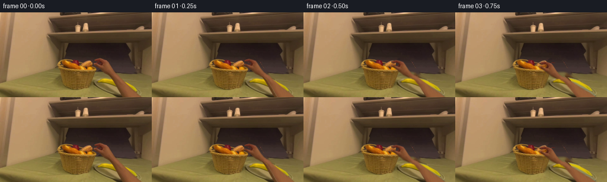
展开代码变化
--- 上一保存版本
+++ 本次保存版本
@@ -17,7 +17,7 @@
return np.array(m).astype(np.float32)/255
# The original silhouette is preserved, including the curled index and thumb.
-hand_outline=[(157.9,80.7),(162.6,78.9),(166.2,78.1),(169.3,78.9),(172.1,80.1),(175,81.5),(177.1,84.0),(179.0,87.5),(181,91.7),(183.9,96.5),(188.8,103.4),(196.5,111),(204.9,119.1),(215.1,129.6),(230.9,143.7),(270,183),(249,183),(213.1,143.7),(206.4,131.8),(200.5,122.1),(195.0,114.7),(190.6,110.1),(185.8,106.5),(179.8,102.4),(174.1,98.1),(170.8,95),(166.9,92.8),(162.4,91.4),(159.9,89.9),(157.7,87.6),(158.5,86.6),(160.4,86.7),(163.8,87.7),(166.9,88.4),(168.9,87.8),(170.6,86.2),(170.9,84.8),(169.7,83.7),(167.5,82.9),(164.8,83),(162.8,83.7),(160.8,83.4),(158.7,83.1),(157.9,82.2)]
+hand_outline=[(157.9,80.7),(162.6,78.9),(166.2,78.1),(169.3,78.9),(174.0,80.2),(177.8,81.6),(180.5,84.8),(183.5,89.5),(187.1,95.0),(191.6,100.2),(196.3,105.2),(202.2,111.0),(209.9,118.9),(219.6,128.1),(231.3,138.3),(238.0,144.0),(276,183),(248,183),(214.1,144.0),(207.8,133.9),(201.8,122.7),(196.1,113.5),(190.2,107.8),(183.3,104.9),(176.7,101.7),(171.6,98.2),(167.9,95.0),(163.8,92.3),(160.6,90.5),(158.0,88.4),(157.7,87.6),(158.5,86.6),(160.4,86.7),(163.8,87.7),(166.9,88.4),(168.9,87.8),(170.6,86.2),(170.9,84.8),(169.7,83.7),(167.5,82.9),(164.8,83),(162.8,83.7),(160.8,83.4),(158.7,83.1),(157.9,82.2)]
hand_mask=poly_mask(hand_outline)
# Remove only the moving arm; the room and all unoccluded food stay untouched.
remove=(hand_mask>.09).astype(np.uint8)*255
@@ -87,7 +87,7 @@
EH=188
src=np.zeros((EH,W,3),np.uint8);src[:H]=im
for yy in range(H,EH):
- xx=np.arange(W)-int((yy-H+1)*.92)
+ xx=np.arange(W)-int((yy-H+1)*1.0)
src[yy]=im[H-1,np.clip(xx,0,W-1)]
alpha=poly_mask(hand_outline,h=EH)
source_rgba=np.dstack([src,alpha*255]).astype(np.float32)
@@ -111,16 +111,16 @@
weight=np.clip((171-xx)/9,0,1)
dp[k,1]+=close*weight*(.7 if yy<85 else -.65)
rigid=(dp-orig)@rot.T+grip
- wrist=(np.array([182.,101.])-orig)@rot.T+grip
- elbow=np.array([239.,162.])
+ wrist=(np.array([184.,101.])-orig)@rot.T+grip
+ elbow=np.array([245.,162.])
dv=elbow-wrist; length=np.linalg.norm(dv)
transverse=np.array([dv[1],-dv[0]])/length
dst=rigid.copy()
for k,(xx,yy) in enumerate(points):
if yy>99:
t=(yy-101)/61
- csrc=182+(yy-101)*57/61
- arm=wrist+t*dv+(xx-csrc)*transverse*.79
+ csrc=184+(yy-101)*61/61
+ arm=wrist+t*dv+(xx-csrc)*transverse*.94
blend=np.clip((yy-99)/13,0,1)
dst[k]=rigid[k]*(1-blend)+arm*blend
mx=np.full((H,W),-1,np.float32);my=mx.copy()
候选 03播放与检查图
点击播放 · 原生 RGB 像素

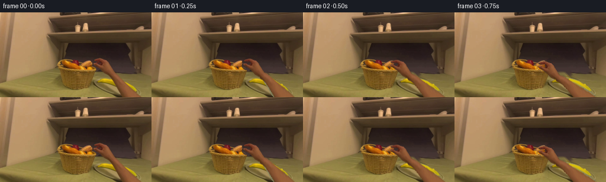
展开代码变化
--- 上一保存版本
+++ 本次保存版本
@@ -21,6 +21,14 @@
hand_mask=poly_mask(hand_outline)
# Remove only the moving arm; the room and all unoccluded food stay untouched.
remove=(hand_mask>.09).astype(np.uint8)*255
+# Expand to the warm, softly shaded skin edge, rather than leaving a
+# narrow source-arm trace where the silhouette goes out of the frame.
+yg,xg=np.mgrid[:H,:W]
+near=cv2.dilate(remove,np.ones((9,9),np.uint8))>0
+rgb=im.astype(float)
+warm=(rgb[:,:,0]-rgb[:,:,1]>26)&(rgb[:,:,1]-rgb[:,:,2]>14)&(rgb[:,:,0]<175)
+near &= ((xg>153)&(yg>76))
+remove[near & warm]=255
remove=cv2.dilate(remove,np.ones((3,3),np.uint8))
base=cv2.inpaint(im,remove,4,cv2.INPAINT_TELEA).astype(np.float32)
y,x=np.mgrid[:H,:W].astype(np.float32)
@@ -52,7 +60,7 @@
wall_a=np.clip((103-y)/4,0,1)
filled=filled*(1-wall_a[...,None])+wallpatch*wall_a[...,None]
# Preserve known scene pixels, replacing only the occluded area.
-a=remove.astype(float)/255
+a=cv2.GaussianBlur(remove.astype(float)/255,(0,0),.45)
base=im*(1-a[...,None])+filled*a[...,None]
# Continue the banana's visible arc across the initially occluded middle.
@@ -90,6 +98,11 @@
xx=np.arange(W)-int((yy-H+1)*1.0)
src[yy]=im[H-1,np.clip(xx,0,W-1)]
alpha=poly_mask(hand_outline,h=EH)
+yg,xg=np.mgrid[:EH,:W]
+near=cv2.dilate((alpha>.07).astype(np.uint8),np.ones((5,5),np.uint8))>0
+rgb=src.astype(float)
+warm=(rgb[:,:,0]-rgb[:,:,1]>26)&(rgb[:,:,1]-rgb[:,:,2]>14)&(rgb[:,:,0]<175)
+alpha=np.maximum(alpha,cv2.GaussianBlur((near&warm).astype(np.float32),(0,0),.28))
source_rgba=np.dstack([src,alpha*255]).astype(np.float32)
# A grid deforms only the arm. Finger and palm pixels remain rigid and recognizable.
xs=np.array([140,150,157,161,165,169,174,180,188,199,213,228,245,267,291],float)
候选 04播放与检查图
点击播放 · 原生 RGB 像素

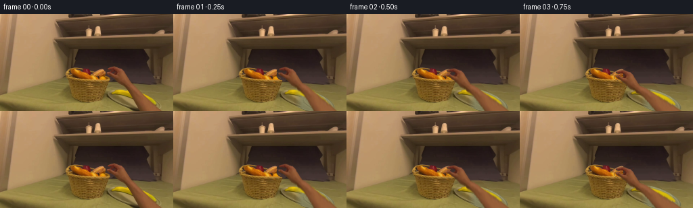
展开代码变化
--- 上一保存版本
+++ 本次保存版本
@@ -57,18 +57,28 @@
for xx in range(W):
sx=min(218,max(201,xx+46))
wallpatch[yy,xx]=im[sy,sx]
-wall_a=np.clip((103-y)/4,0,1)
+# Unoccluded wall and tabletop samples are used to continue the surfaces.
+for yy in range(103,H):
+ wallpatch[yy,:,:]=im[yy,243]
+wall_a=np.ones((H,W),np.float32)
+plane=wallpatch.copy()
+plane=plane*(1-plate[...,None])+col*plate[...,None]
+filled=plane
filled=filled*(1-wall_a[...,None])+wallpatch*wall_a[...,None]
# Preserve known scene pixels, replacing only the occluded area.
a=cv2.GaussianBlur(remove.astype(float)/255,(0,0),.45)
base=im*(1-a[...,None])+filled*a[...,None]
# Continue the banana's visible arc across the initially occluded middle.
-banana_points=[(164.0,115.4),(167.6,112.2),(173.0,111.8),(181.0,112.0),(188.0,113.4),(195.5,116.0),(203.3,119.0),(211.0,123.0),(217.7,126.8),(225,131.2),(229,133.3),(230.0,132.0),(228.1,128.0),(223.8,123.4),(218.0,119.7),(210.6,116.9),(203.2,114.4),(194.0,112.6),(184.0,111.4),(175.7,111.1),(168.9,112.3),(165.0,113.8)]
+banana_points=[(164,115.8),(168,112.9),(174,111.8),(182,112.3),(190,113.5),(198,115.5),(205,117.6),(212,120.3),(218,123.2),(224,127.2),(228,131),(230,134),(228.5,135.2),(224,134),(219,132),(213,129.7),(206,127),(199,124.2),(192,121.6),(186,119.3),(179,117.7),(172,116.9),(166,117.9)]
bm=poly_mask(banana_points,feather=.6)
banana_color=np.stack([223-15*np.clip((y-114)/19,0,1),196-19*np.clip((y-114)/19,0,1),8+5*np.clip((y-114)/19,0,1)],axis=-1).astype(float)
banana_color += tex*.35
-ba=bm*a
+# Smoothly restore the entire right portion so no artificial cut follows
+# the old arm edge through the plate or banana.
+restore=np.clip((x-179)/11,0,1)*np.clip((y-106)/6,0,1)*plate
+base=base*(1-restore[...,None])+plane*restore[...,None]
+ba=bm*np.maximum(a,restore)
base=base*(1-ba[...,None])+banana_color*ba[...,None]
base=np.clip(base,0,255).astype(np.uint8)
@@ -79,8 +89,8 @@
empty=cv2.inpaint(base,bread_remove,3,cv2.INPAINT_TELEA).astype(float)
# A dim basket interior and the formerly occluded bottom of the red apple.
cavity=np.clip((95.8-y)/2,0,1)*np.clip((y-81)/3,0,1)
-cavitycol=np.stack([99+8*np.sin(x*.47)+4*np.sin(y*1.2),82+6*np.sin(x*.47),37+3*np.sin(y)],axis=-1)
-ca=(bread_remove/255)*cavity*.76
+cavitycol=np.stack([82+9*np.sin(x*.47)+6*np.sin(y*1.2),55+7*np.sin(x*.47),25+4*np.sin(y)],axis=-1)
+ca=(bread_remove/255)*cavity*.94
empty=empty*(1-ca[...,None])+cavitycol*ca[...,None]
appler=((x-127.3)/6.1)**2+((y-87.9)/7.1)**2
ap=np.clip((1-appler)*3,0,1)*(bread_remove/255)
@@ -102,7 +112,8 @@
near=cv2.dilate((alpha>.07).astype(np.uint8),np.ones((5,5),np.uint8))>0
rgb=src.astype(float)
warm=(rgb[:,:,0]-rgb[:,:,1]>26)&(rgb[:,:,1]-rgb[:,:,2]>14)&(rgb[:,:,0]<175)
-alpha=np.maximum(alpha,cv2.GaussianBlur((near&warm).astype(np.float32),(0,0),.28))
+alpha=np.maximum(alpha,cv2.GaussianBlur((near&warm).astype(np.float32),(0,0),.55))
+alpha=cv2.GaussianBlur(alpha,(0,0),.35)
source_rgba=np.dstack([src,alpha*255]).astype(np.float32)
# A grid deforms only the arm. Finger and palm pixels remain rigid and recognizable.
xs=np.array([140,150,157,161,165,169,174,180,188,199,213,228,245,267,291],float)
候选 05播放与检查图
点击播放 · 原生 RGB 像素
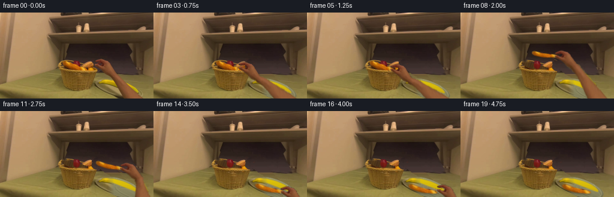
展开代码变化
--- 上一保存版本
+++ 本次保存版本
@@ -2,7 +2,6 @@
import numpy as np
from PIL import Image, ImageDraw, ImageFilter
import cv2
-from scipy.spatial import Delaunay
from artifact_io import save
ROOT=Path(__file__).resolve().parent
@@ -89,7 +88,8 @@
empty=cv2.inpaint(base,bread_remove,3,cv2.INPAINT_TELEA).astype(float)
# A dim basket interior and the formerly occluded bottom of the red apple.
cavity=np.clip((95.8-y)/2,0,1)*np.clip((y-81)/3,0,1)
-cavitycol=np.stack([82+9*np.sin(x*.47)+6*np.sin(y*1.2),55+7*np.sin(x*.47),25+4*np.sin(y)],axis=-1)
+weave=4*np.sin(x*1.6+y*.58)+3*np.cos(y*2.6-x*.14)
+cavitycol=np.stack([76+weave+5*np.sin(x*.47),52+weave*.7+4*np.sin(x*.47),25+weave*.4],axis=-1)
ca=(bread_remove/255)*cavity*.94
empty=empty*(1-ca[...,None])+cavitycol*ca[...,None]
appler=((x-127.3)/6.1)**2+((y-87.9)/7.1)**2
@@ -194,7 +194,8 @@
bg*=1-sh[...,None]
bg=composite(bg,b)
hand=hand_pose(hand_grips[i],theta=np.interp(i,[1,5,9,14,19],[0,0,-5,0,7]),close=1 if 5<=i<=15 else 0)
- bg=composite(bg,hand)
+ if i<19:
+ bg=composite(bg,hand)
frames.append(np.clip(bg,0,255).astype(np.uint8))
frames=np.stack(frames)
# Useful local inspection assets are also regenerated.
可观测工具轨迹
实际执行的命令与返回图片。
命令 1exit 0
/bin/bash -lc "ls -la && cat prompt.txt && printf '\\n--- RULES ---\\n' && cat GENERATION_RULES.md"
命令 2exit 0
/bin/bash -lc 'cat task_spec.json && cat artifact_io.py'
命令 3exit 0
/bin/bash -lc "python - <<'PY'
from PIL import Image
im=Image.open('first_frame.png'); print(im.size)
im.resize((1024,576)).save('.tmp/first_large.png')
PY"命令 4exit 0
/bin/bash -lc "python - <<'PY'
from PIL import Image
im=Image.open('first_frame.png');im.crop((92,73,180,106)).resize((1056,396)).save('.tmp/crop.png')
PY"命令 5exit 0
/bin/bash -lc "python - <<'PY'
from PIL import Image
im=Image.open('first_frame.png'); im.crop((150,74,240,144)).resize((720,560)).save('.tmp/hand.png')
import importlib.util
for mod in ['scipy','cv2']: print(mod, bool(importlib.util.find_spec(mod)))
PY"命令 6exit 0
/bin/bash -lc "python - <<'PY'
from PIL import Image,ImageDraw
im=Image.open('first_frame.png').resize((1024,576)); d=ImageDraw.Draw(im)
for x in range(80,241,5):
d.line((x*4,72*4,x*4,144*4),fill=(100,100,100),width=1);d.text((x*4+1,73*4),str(x),fill='white')
for y in range(80,145,5):
d.line((80*4,y*4,256*4,y*4),fill=(100,100,100),width=1);d.text((80*4,y*4+1),str(y),fill='white')
im.save('.tmp/grid.png')
PY"命令 7exit 0
/bin/bash -lc "cat > generate.py <<'PY'
from pathlib import Path
import numpy as np
from PIL import Image, ImageDraw, ImageFilter
import cv2
from scipy.spatial import Delaunay
from artifact_io import save
ROOT=Path(__file__).resolve().parent
W,H=256,144
im=np.array(Image.open(ROOT/'first_frame.png').convert('RGB'))
def poly_mask(points, h=H, w=W, feather=.35):
s=4
m=Image.new('L',(w*s,h*s)); ImageDraw.Draw(m).polygon([(round(x*s),round(y*s)) for x,y in points],fill=255)
m=m.resize((w,h),Image.Resampling.LANCZOS)
if feather: m=m.filter(ImageFilter.GaussianBlur(feather))
return np.array(m).astype(np.float32)/255
# The original silhouette is preserved, including the curled index and thumb.
hand_outline=[(157.9,80.7),(162.6,78.9),(166.2,78.1),(169.3,78.9),(172.1,80.1),(175,81.5),(177.1,84.0),(179.0,87.5),(181,91.7),(183.9,96.5),(188.8,103.4),(196.5,111),(204.9,119.1),(215.1,129.6),(230.9,143.7),(270,183),(249,183),(213.1,143.7),(206.4,131.8),(200.5,122.1),(195.0,114.7),(190.6,110.1),(185.8,106.5),(179.8,102.4),(174.1,98.1),(170.8,95),(166.9,92.8),(162.4,91.4),(159.9,89.9),(157.7,87.6),(158.5,86.6),(160.4,86.7),(163.8,87.7),(166.9,88.4),(168.9,87.8),(170.6,86.2),(170.9,84.8),(169.7,83.7),(167.5,82.9),(164.8,83),(162.8,83.7),(160.8,83.4),(158.7,83.1),(157.9,82.2)]
hand_mask=poly_mask(hand_outline)
# Remove only the moving arm; the room and all unoccluded food stay untouched.
remove=(hand_mask>.09).astype(np.uint8)*255
remove=cv2.dilate(remove,np.ones((3,3),np.uint8))
base=cv2.inpaint(im,remove,4,cv2.INPAINT_TELEA).astype(np.float32)
y,x=np.mgrid[:H,:W].astype(np.float32)
# Reconstruct portions of the grey plate that were hidden by the forearm.
ang=np.deg2rad(18)
u=(x-198.5)*np.cos(ang)+(y-127.7)*np.sin(ang)
v=-(x-198.5)*np.sin(ang)+(y-127.7)*np.cos(ang)
r=np.sqrt((u/42.4)**2+(v/15.5)**2)
plate=np.clip((1.015-r)/.065,0,1)
# Fine surface texture copied from the visible lower-left part of the plate.
noise=im.astype(float)-cv2.GaussianBlur(im.astype(float),(5,5),0)
tex=np.roll(noise,(9,34),axis=(0,1))*.4
col=np.stack([139-11*v/15-8*(u/43)**2,135-10*v/15-8*(u/43)**2,96-7*v/15-5*(u/43)**2],axis=-1)+tex
edge=np.exp(-((r-.955)/.027)**2)
col-=edge[...,None]*np.array([20,19,14])
inner=np.exp(-((r-.891)/.028)**2)
col+=inner[...,None]*np.array([12,11,8])
# Soft cast shadow below the plate at the table edge.
sh=np.exp(-((r-1.055)/.04)**2)*.2
filled=base*(1-sh[...,None])
filled=filled*(1-plate[...,None])+col*plate[...,None]
# Back wall has a very soft horizontal change of illumination.
wallpatch=np.zeros_like(base)
for yy in range(H):
sy=min(yy,103)
for xx in range(W):
sx=min(218,max(201,xx+46))
wallpatch[yy,xx]=im[sy,sx]
wall_a=np.clip((103-y)/4,0,1)
filled=filled*(1-wall_a[...,None])+wallpatch*wall_a[...,None]
# Preserve known scene pixels, replacing only the occluded area.
a=remove.astype(float)/255
base=im*(1-a[...,None])+filled*a[...,None]
# Continue the banana's visible arc across the initially occluded middle.
banana_points=[(164.0,115.4),(167.6,112.2),(173.0,111.8),(181.0,112.0),(188.0,113.4),(195.5,116.0),(203.3,119.0),(211.0,123.0),(217.7,126.8),(225,131.2),(229,133.3),(230.0,132.0),(228.1,128.0),(223.8,123.4),(218.0,119.7),(210.6,116.9),(203.2,114.4),(194.0,112.6),(184.0,111.4),(175.7,111.1),(168.9,112.3),(165.0,113.8)]
bm=poly_mask(banana_points,feather=.6)
banana_color=np.stack([223-15*np.clip((y-114)/19,0,1),196-19*np.clip((y-114)/19,0,1),8+5*np.clip((y-114)/19,0,1)],axis=-1).astype(float)
banana_color += tex*.35
ba=bm*a
base=base*(1-ba[...,None])+banana_color*ba[...,None]
base=np.clip(base,0,255).astype(np.uint8)
# The long crusty loaf at the front of the basket.
bread_outline=[(105.8,81.1),(108.3,80.7),(110.5,81.8),(113.7,83.1),(117.4,85.0),(122.6,86.9),(128.9,89.0),(133.9,90.0),(138.1,91.4),(141.8,93.1),(143.8,94.9),(141.9,96.3),(138.3,96.5),(132.2,95.3),(127.0,94.8),(121.6,93.6),(115.6,91.2),(111.1,89.6),(107.5,87.7),(104.5,84.8),(104.2,82.7)]
bread_mask=poly_mask(bread_outline,feather=.28)
bread_remove=cv2.dilate((bread_mask>.12).astype(np.uint8)*255,np.ones((3,3),np.uint8))
empty=cv2.inpaint(base,bread_remove,3,cv2.INPAINT_TELEA).astype(float)
# A dim basket interior and the formerly occluded bottom of the red apple.
cavity=np.clip((95.8-y)/2,0,1)*np.clip((y-81)/3,0,1)
cavitycol=np.stack([99+8*np.sin(x*.47)+4*np.sin(y*1.2),82+6*np.sin(x*.47),37+3*np.sin(y)],axis=-1)
ca=(bread_remove/255)*cavity*.76
empty=empty*(1-ca[...,None])+cavitycol*ca[...,None]
appler=((x-127.3)/6.1)**2+((y-87.9)/7.1)**2
ap=np.clip((1-appler)*3,0,1)*(bread_remove/255)
apcol=np.stack([111+17*np.exp(-((x-129)/2)**2)-3*(y-88),25+4*np.exp(-((x-129)/2)**2),20+np.zeros_like(x)],-1)
empty=empty*(1-ap[...,None])+apcol*ap[...,None]
# The wicker front rim is not carried along with the loaf.
rim=np.clip((y-96)/1.2,0,1)
empty=empty*(1-rim[...,None])+base*rim[...,None]
empty=np.clip(empty,0,255).astype(np.uint8)
# Extend the source forearm beyond the lower boundary before posing it.
EH=188
src=np.zeros((EH,W,3),np.uint8);src[:H]=im
for yy in range(H,EH):
xx=np.arange(W)-int((yy-H+1)*.92)
src[yy]=im[H-1,np.clip(xx,0,W-1)]
alpha=poly_mask(hand_outline,h=EH)
source_rgba=np.dstack([src,alpha*255]).astype(np.float32)
# A grid deforms only the arm. Finger and palm pixels remain rigid and recognizable.
xs=np.array([140,150,157,161,165,169,174,180,188,199,213,228,245,267,291],float)
ys=np.array([70,77,81,84,87,91,95,99,104,111,123,139,156,172,187],float)
points=np.array([(xx,yy) for yy in ys for xx in xs],np.float32)
tris=[]
for j in range(len(ys)-1):
for i in range(len(xs)-1):
q=j*len(xs)+i
tris += [(q,q+1,q+len(xs)),(q+1,q+len(xs)+1,q+len(xs))]
def hand_pose(grip, theta=0, close=0):
theta=np.deg2rad(theta); rot=np.array([[np.cos(theta),-np.sin(theta)],[np.sin(theta),np.cos(theta)]])
orig=np.array([160.,85.]); grip=np.array(grip,float)
dp=points.astype(float).copy()
# Imperceptibly tighten the C-shaped pinch when contact is established.
for k,(xx,yy) in enumerate(points):
if xx<170 and yy<91:
weight=np.clip((171-xx)/9,0,1)
dp[k,1]+=close*weight*(.7 if yy<85 else -.65)
rigid=(dp-orig)@rot.T+grip
wrist=(np.array([182.,101.])-orig)@rot.T+grip
elbow=np.array([239.,162.])
dv=elbow-wrist; length=np.linalg.norm(dv)
transverse=np.array([dv[1],-dv[0]])/length
dst=rigid.copy()
for k,(xx,yy) in enumerate(points):
if yy>99:
t=(yy-101)/61
csrc=182+(yy-101)*57/61
arm=wrist+t*dv+(xx-csrc)*transverse*.79
blend=np.clip((yy-99)/13,0,1)
dst[k]=rigid[k]*(1-blend)+arm*blend
mx=np.full((H,W),-1,np.float32);my=mx.copy()
for tr in tris:
s=points[list(tr)];d=dst[list(tr)].astype(np.float32)
xmin=max(0,int(np.floor(d[:,0].min())));xmax=min(W-1,int(np.ceil(d[:,0].max())))
ymin=max(0,int(np.floor(d[:,1].min())));ymax=min(H-1,int(np.ceil(d[:,1].max())))
if xmax<xmin or ymax<ymin:continue
xx,yy=np.meshgrid(np.arange(xmin,xmax+1),np.arange(ymin,ymax+1))
den=(d[1,1]-d[2,1])*(d[0,0]-d[2,0])+(d[2,0]-d[1,0])*(d[0,1]-d[2,1])
if abs(den)<1e-5:continue
w0=((d[1,1]-d[2,1])*(xx-d[2,0])+(d[2,0]-d[1,0])*(yy-d[2,1]))/den
w1=((d[2,1]-d[0,1])*(xx-d[2,0])+(d[0,0]-d[2,0])*(yy-d[2,1]))/den
w2=1-w0-w1;inside=(w0>=-1e-4)&(w1>=-1e-4)&(w2>=-1e-4)
mappedx=w0*s[0,0]+w1*s[1,0]+w2*s[2,0]
mappedy=w0*s[0,1]+w1*s[1,1]+w2*s[2,1]
patch=mx[ymin:ymax+1,xmin:xmax+1];patch[inside]=mappedx[inside]
patch=my[ymin:ymax+1,xmin:xmax+1];patch[inside]=mappedy[inside]
return cv2.remap(source_rgba,mx,my,cv2.INTER_LINEAR,borderMode=cv2.BORDER_CONSTANT)
bread_src=np.dstack([im,bread_mask*255]).astype(np.float32)
def bread_pose(grip,theta,scale):
th=np.deg2rad(theta);R=np.array([[np.cos(th),-np.sin(th)],[np.sin(th),np.cos(th)]])*scale
p=np.array([141.,93.]);g=np.array(grip)
M=np.column_stack([R,g-R@p]).astype(np.float32)
return cv2.warpAffine(bread_src,M,(W,H),flags=cv2.INTER_LINEAR,borderMode=cv2.BORDER_CONSTANT)
def composite(bg,rgba):
a=rgba[:,:,3:4]/255
return bg*(1-a)+rgba[:,:,:3]*a
hand_grips=[(160,85),(157,85.5),(150,87.5),(144,90),(141,92),(141,93),(142,85),(148,76),(159,71),(173,74),(189,82),(202,94),(209,109),(213,123),(214,133),(214,134),(219,130),(231,137),(248,150),(269,169)]
bread_grips=[(141,93)]*6+[(142,85),(148,76),(159,71),(173,74),(189,82),(202,94),(209,109),(213,123),(214,133),(214,134)]+[(214,134)]*4
frames=[im.copy()]
for i in range(1,20):
lifted=i>=6
bg=(empty if lifted else base).astype(float).copy()
if lifted:
theta=np.interp(i,[6,8,11,14,19],[0,-10,-5,-4,-4])
scale=np.interp(i,[6,9,14],[1,1.08,1.2])
b=bread_pose(bread_grips[i],theta,scale)
# The shadow lands on the plate gradually as the loaf is lowered.
if i>=11:
aa=b[:,:,3]/255
blur=cv2.GaussianBlur(aa,(0,0),1.5)
sh=np.roll(blur,2,axis=0)*np.interp(i,[11,14],[.05,.25])
bg*=1-sh[...,None]
bg=composite(bg,b)
hand=hand_pose(hand_grips[i],theta=np.interp(i,[1,5,9,14,19],[0,0,-5,0,7]),close=1 if 5<=i<=15 else 0)
bg=composite(bg,hand)
frames.append(np.clip(bg,0,255).astype(np.uint8))
frames=np.stack(frames)
# Useful local inspection assets are also regenerated.
(ROOT/'.tmp').mkdir(exist_ok=True)
Image.fromarray(base).save(ROOT/'.tmp/background.png')
Image.fromarray(empty).save(ROOT/'.tmp/empty_basket.png')
save(frames,ROOT)
print('Saved',frames.shape,frames.dtype)
PY
python generate.py"命令 8exit 0
/bin/bash -lc "python - <<'PY'
exec(open('generate.py').read().split('frames=[im.copy()]')[0])
over=im.astype(float).copy();over=over*(1-hand_mask[...,None]*.5)+np.array([0,255,0])*hand_mask[...,None]*.5
Image.fromarray(over.astype('uint8')).resize((1024,576)).save('.tmp/mask_overlay.png')
Image.fromarray(frames[1] if 'frames' in globals() else base).resize((1024,576)).save('.tmp/base_large.png')
PY"命令 9exit 0
/bin/bash -lc "python - <<'PY'
from PIL import Image,ImageDraw
im=Image.open('first_frame.png').crop((154,76,244,144)).resize((900,680));d=ImageDraw.Draw(im)
for x in range(155,245,5):
d.line(((x-154)*10,0,(x-154)*10,680),fill=(120,120,120)); d.text(((x-154)*10,1),str(x),fill='white')
for y in range(80,145,5):
d.line((0,(y-76)*10,900,(y-76)*10),fill=(120,120,120)); d.text((0,(y-76)*10),str(y),fill='white')
im.save('.tmp/arm_grid.png')
PY"命令 10exit 0
/bin/bash -lc "python - <<'PY'
p='generate.py'
s=open(p).read()
a=s.index('hand_outline='); b=s.index('\\nhand_mask=',a)
s=s[:a]+'''hand_outline=[(157.9,80.7),(162.6,78.9),(166.2,78.1),(169.3,78.9),(174.0,80.2),(177.8,81.6),(180.5,84.8),(183.5,89.5),(187.1,95.0),(191.6,100.2),(196.3,105.2),(202.2,111.0),(209.9,118.9),(219.6,128.1),(231.3,138.3),(238.0,144.0),(276,183),(248,183),(214.1,144.0),(207.8,133.9),(201.8,122.7),(196.1,113.5),(190.2,107.8),(183.3,104.9),(176.7,101.7),(171.6,98.2),(167.9,95.0),(163.8,92.3),(160.6,90.5),(158.0,88.4),(157.7,87.6),(158.5,86.6),(160.4,86.7),(163.8,87.7),(166.9,88.4),(168.9,87.8),(170.6,86.2),(170.9,84.8),(169.7,83.7),(167.5,82.9),(164.8,83),(162.8,83.7),(160.8,83.4),(158.7,83.1),(157.9,82.2)]'''+s[b:]
s=s.replace(\"(yy-H+1)*.92\", \"(yy-H+1)*1.0\").replace(\"[182.,101.]\", \"[184.,101.]\").replace(\"[239.,162.]\", \"[245.,162.]\").replace(\"182+(yy-101)*57/61\", \"184+(yy-101)*61/61\").replace(\"transverse*.79\", \"transverse*.94\")
open(p,'w').write(s)
PY
python generate.py"命令 11exit 0
/bin/bash -lc "python - <<'PY'
from PIL import Image
for f in ['.tmp/background.png','frames/01.png','frames/08.png','frames/14.png','frames/19.png']:
im=Image.open(f); im.resize((1024,576)).save('.tmp/'+f.split('/')[-1].replace('.png','_large.png'))
PY"命令 12exit 0
/bin/bash -lc "python - <<'PY'
from PIL import Image
import numpy as np
im=np.array(Image.open('first_frame.png'))
for p in [(190,110),(191,110),(194,115),(198,122),(210,142),(214,142),(180,85),(183,90),(191,98),(160,81),(161,86),(163,88),(167,92),(190,85),(200,101),(177,98)]:print(p,im[p[1],p[0]])
PY"命令 13exit 0
/bin/bash -lc "python - <<'PY' p='generate.py';s=open(p).read() s=s.replace(\"remove=cv2.dilate(remove,np.ones((3,3),np.uint8))\", \"\"\"# Expand to the warm, softly shaded skin edge, rather than leaving a # narrow source-arm trace where the silhouette goes out of the frame. yg,xg=np.mgrid[:H,:W] near=cv2.dilate(remove,np.ones((9,9),np.uint8))>0 rgb=im.astype(float) warm=(rgb[:,:,0]-rgb[:,:,1]>26)&(rgb[:,:,1]-rgb[:,:,2]>14)&(rgb[:,:,0]<175) near &= ((xg>153)&(yg>76)) remove[near & warm]=255 remove=cv2.dilate(remove,np.ones((3,3),np.uint8))\"\"\") s=s.replace(\"a=remove.astype(float)/255\", \"a=cv2.GaussianBlur(remove.astype(float)/255,(0,0),.45)\") # extend actual hand source shape to its dark underside too s=s.replace(\"alpha=poly_mask(hand_outline,h=EH)\", \"\"\"alpha=poly_mask(hand_outline,h=EH) yg,xg=np.mgrid[:EH,:W] near=cv2.dilate((alpha>.07).astype(np.uint8),np.ones((5,5),np.uint8))>0 rgb=src.astype(float) warm=(rgb[:,:,0]-rgb[:,:,1]>26)&(rgb[:,:,1]-rgb[:,:,2]>14)&(rgb[:,:,0]<175) alpha=np.maximum(alpha,cv2.GaussianBlur((near&warm).astype(np.float32),(0,0),.28))\"\"\") open(p,'w').write(s) PY python generate.py"
命令 14exit 0
/bin/bash -lc "python - <<'PY'
from PIL import Image
for name in ['01','08','14','19']:
Image.open('frames/'+name+'.png').resize((1024,576)).save('.tmp/frame'+name+'.png')
PY"命令 15exit 0
/bin/bash -lc "python - <<'PY'
from PIL import Image
Image.open('.tmp/background.png').resize((1024,576)).save('.tmp/newbase.png')
PY"命令 16exit 0
/bin/bash -lc "python - <<'PY'
p='generate.py';s=open(p).read()
s=s.replace('wall_a=np.clip((103-y)/4,0,1)','''# Unoccluded wall and tabletop samples are used to continue the surfaces.
for yy in range(103,H):
wallpatch[yy,:,:]=im[yy,243]
wall_a=np.ones((H,W),np.float32)
plane=wallpatch.copy()
plane=plane*(1-plate[...,None])+col*plate[...,None]
filled=plane''')
a=s.index('banana_points=');b=s.index('\\nbm=',a)
s=s[:a]+'''banana_points=[(164,115.8),(168,112.9),(174,111.8),(182,112.3),(190,113.5),(198,115.5),(205,117.6),(212,120.3),(218,123.2),(224,127.2),(228,131),(230,134),(228.5,135.2),(224,134),(219,132),(213,129.7),(206,127),(199,124.2),(192,121.6),(186,119.3),(179,117.7),(172,116.9),(166,117.9)]'''+s[b:]
s=s.replace('ba=bm*a', '''# Smoothly restore the entire right portion so no artificial cut follows
# the old arm edge through the plate or banana.
restore=np.clip((x-179)/11,0,1)*np.clip((y-106)/6,0,1)*plate
base=base*(1-restore[...,None])+plane*restore[...,None]
ba=bm*np.maximum(a,restore)''')
s=s.replace('99+8*np.sin(x*.47)+4*np.sin(y*1.2),82+6*np.sin(x*.47),37+3*np.sin(y)','82+9*np.sin(x*.47)+6*np.sin(y*1.2),55+7*np.sin(x*.47),25+4*np.sin(y)')
s=s.replace('cavity*.76','cavity*.94')
s=s.replace(\"alpha=np.maximum(alpha,cv2.GaussianBlur((near&warm).astype(np.float32),(0,0),.28))\", \"alpha=np.maximum(alpha,cv2.GaussianBlur((near&warm).astype(np.float32),(0,0),.55))\\nalpha=cv2.GaussianBlur(alpha,(0,0),.35)\")
open(p,'w').write(s)
PY
python generate.py"命令 17exit 0
/bin/bash -lc "python - <<'PY'
from PIL import Image
for n in ['01','08','19']:Image.open('frames/'+n+'.png').resize((1024,576)).save('.tmp/revised'+n+'.png')
PY"命令 18exit 0
/bin/bash -lc "python - <<'PY'
p='generate.py';s=open(p).read().replace('from scipy.spatial import Delaunay\\n','')
s=s.replace('cavitycol=np.stack([82+9*np.sin(x*.47)+6*np.sin(y*1.2),55+7*np.sin(x*.47),25+4*np.sin(y)],axis=-1)', '''weave=4*np.sin(x*1.6+y*.58)+3*np.cos(y*2.6-x*.14)
cavitycol=np.stack([76+weave+5*np.sin(x*.47),52+weave*.7+4*np.sin(x*.47),25+weave*.4],axis=-1)''')
s=s.replace('bg=composite(bg,hand)\\n frames.append', 'if i<19:\\n bg=composite(bg,hand)\\n frames.append')
open(p,'w').write(s)
PY
python generate.py
python - <<'PY'
import numpy as np
from PIL import Image
from pathlib import Path
f=np.stack([np.array(Image.open(p).convert('RGB')) for p in sorted(Path('frames').glob('*.png'))])
first=np.array(Image.open('first_frame.png').convert('RGB'))
assert f.shape==(20,144,256,3) and f.dtype==np.uint8
assert np.array_equal(f[0],first)
p=np.load('pixels.npz')['pixels']
assert p.shape==(144,256,20)
print('Validated: 20 RGB frames, 256x144, first frame pixel-identical.')
PY"视觉工具实际返回图片 1
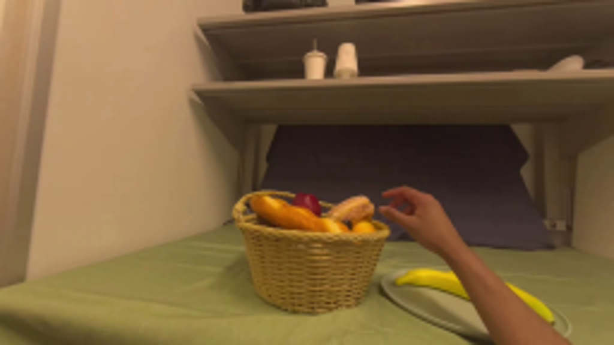
视觉工具实际返回图片 2
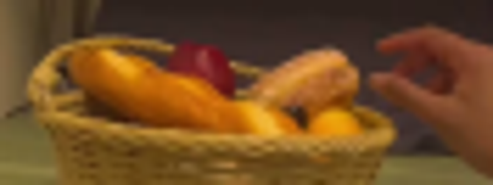
视觉工具实际返回图片 3
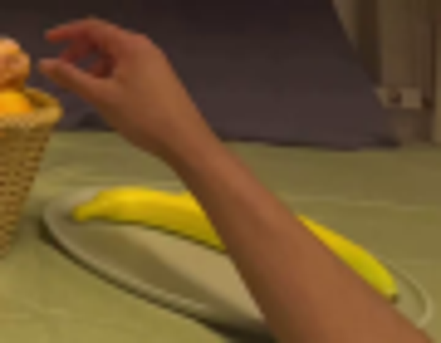
视觉工具实际返回图片 4
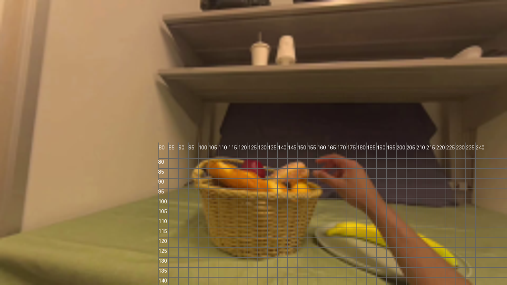
视觉工具实际返回图片 5

视觉工具实际返回图片 6
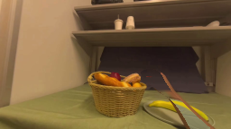
视觉工具实际返回图片 7
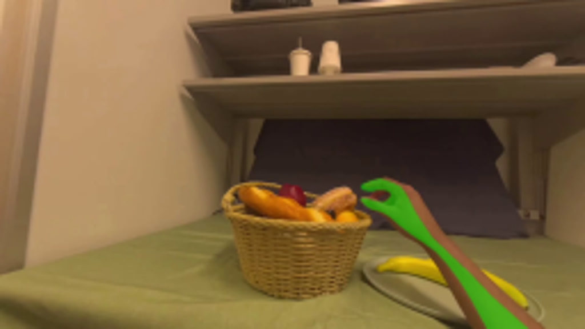
视觉工具实际返回图片 8
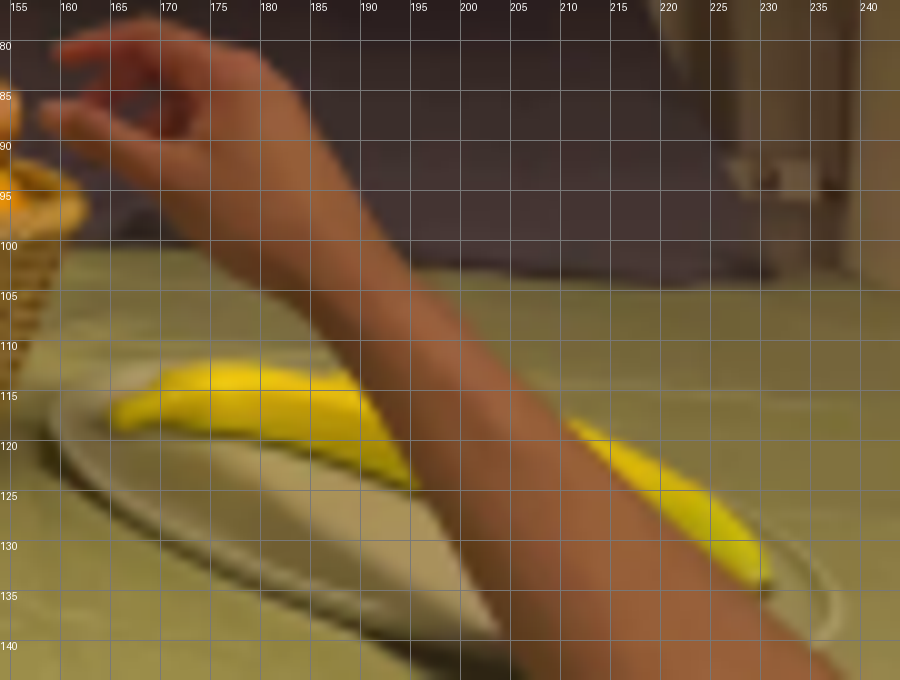
视觉工具实际返回图片 9
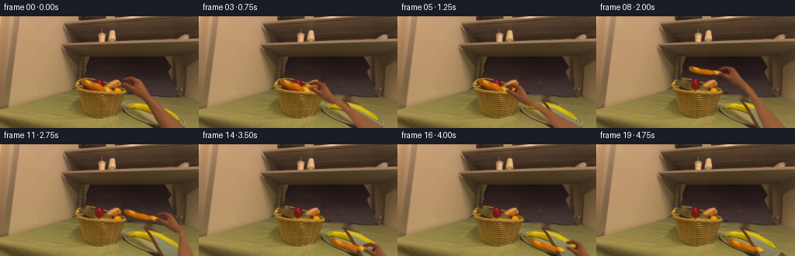
视觉工具实际返回图片 10
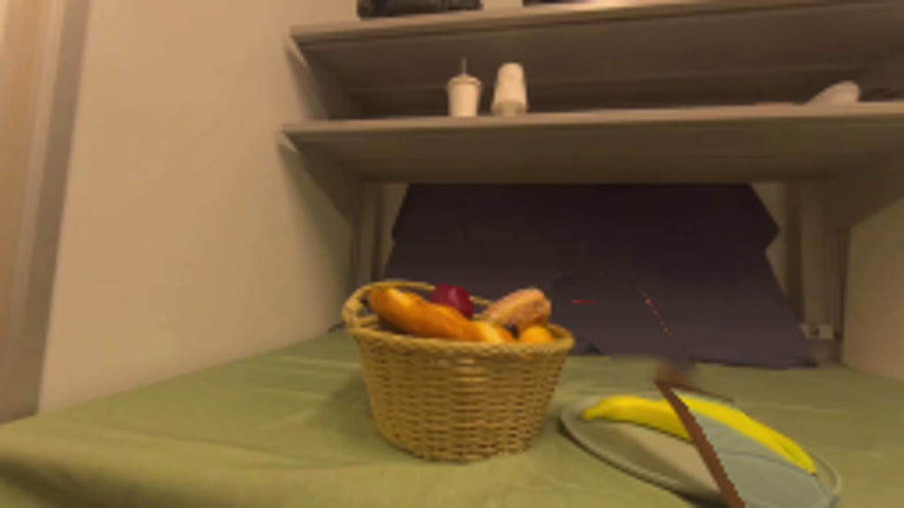
视觉工具实际返回图片 11
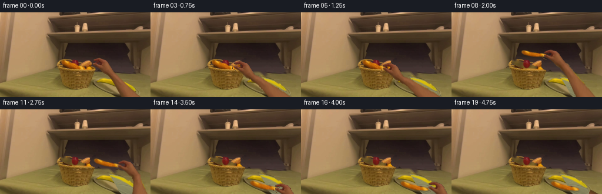
视觉工具实际返回图片 12
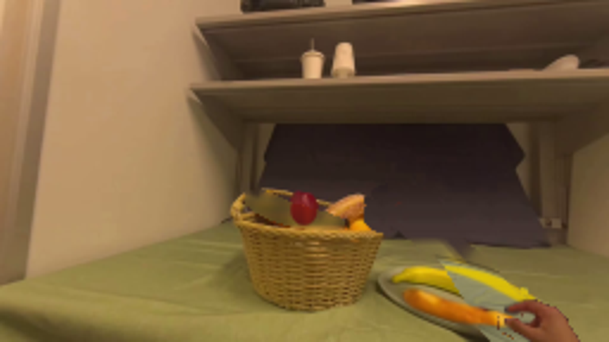
视觉工具实际返回图片 13
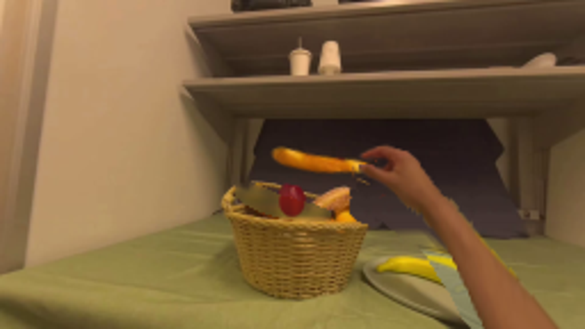
视觉工具实际返回图片 14
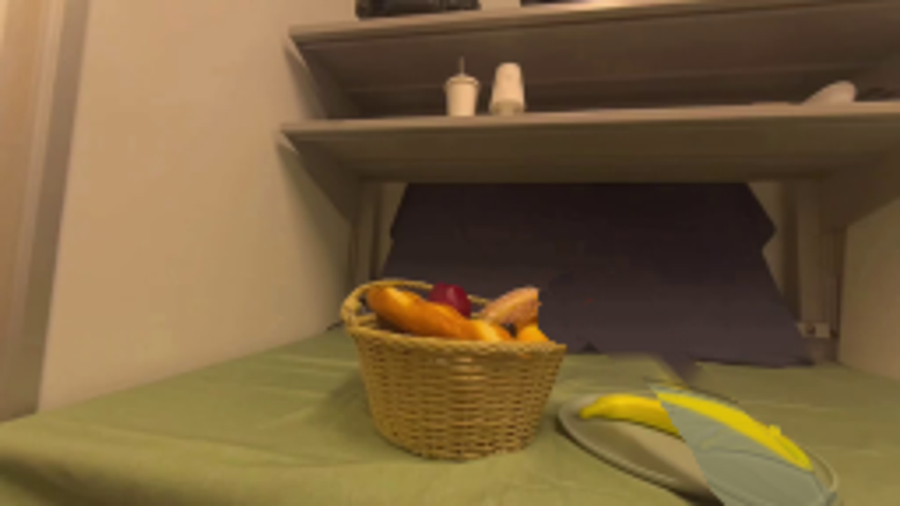
视觉工具实际返回图片 15
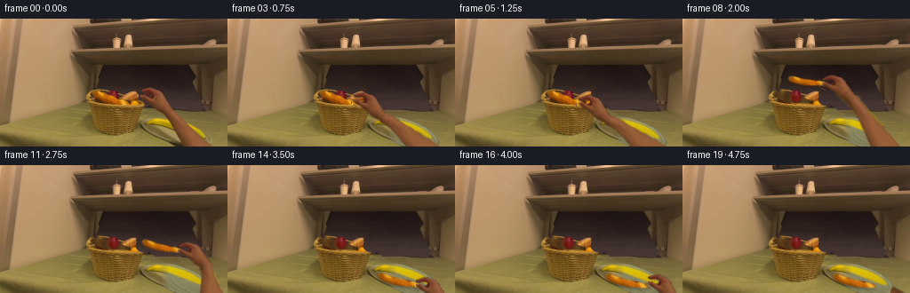
视觉工具实际返回图片 16
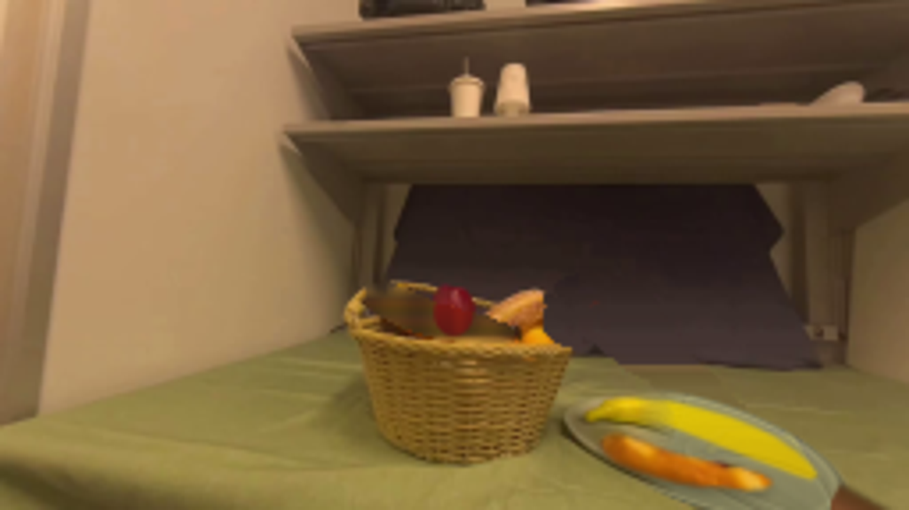
视觉工具实际返回图片 17
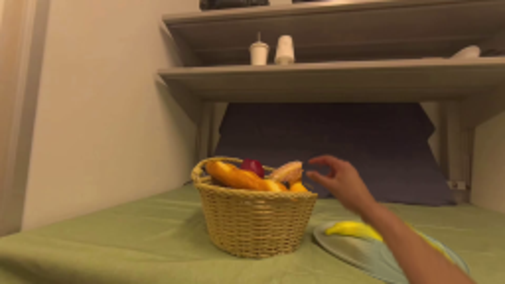
保存候选 5 份；完成命令 18 次；可验证图片返回 17 张。原始 API 响应与完整日志保留在本地。